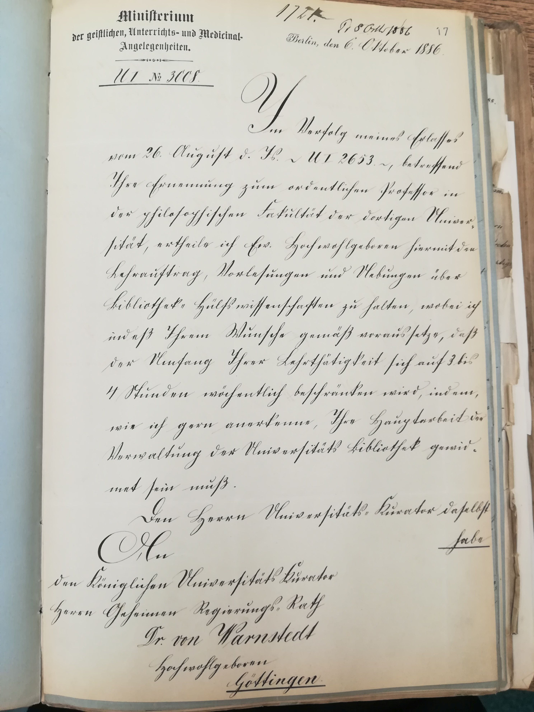
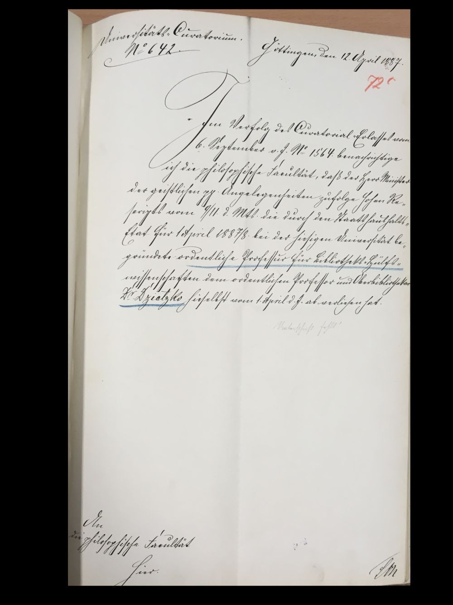
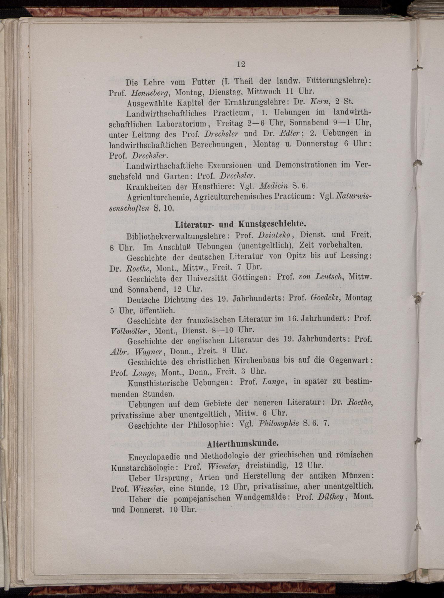
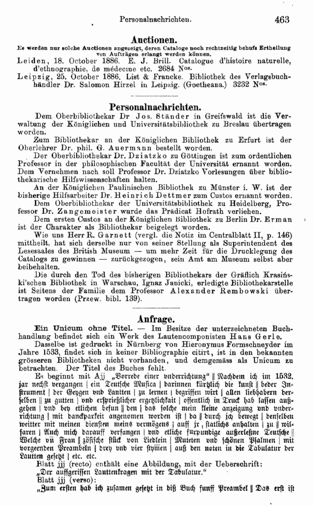

Großer Dank gebührt Dr. Christian Fieseler von der SUB Göttingen und Dr. Holger Berwinkel vom Universitätsarchiv in Göttingen für die Aufarbeitung und Bereitstellung der historischen Informationen in diesem Beitrag.
Es ist mit erfreulich, Euer Hochwohlgeboren im Verfolg meines Erlasses vom 22. Juli d[iesen] J[ahres] […] davon in Kenntniß zu setzen, daß Seine Majestät der Kaiser und König Allergnädigst geruht haben, Sie zum ordentlichen Professor in der philosophischen Fakultät der Universität Göttingen zu ernennen. Indem ich Ihnen die darüber ausgefertigte, unterm 15. August d. J. Allerhöchsten Orts vollzogene Bestallung beifolgend übersende, verleihe ich Ihnen in der genannten Fakultät das […] Ordinariat mit dem Bemerken, daß ich mir wegen Ertheilung eines Lehrauftrages die Verfügung einstweilen vorbehalte.[Schreiben aus dem Ministerium der geistlichen, Unterrichts- und Medicinalangelegenheiten an Karl Dziatzko vom 26. August 1886. Aus Dziatzkos Personalakte (Kur. Nr. 5961 ), der zu der Zeit Oberbibliothekar in Göttingen war.]

Die Entstehungsgeschichte des Instituts für Bibliotheks- und Informationswissenschaft der Humboldt-Universität zu Berlin ist eng mit der Universität Göttingen verbunden. Wie in der vorbildlichen Ausarbeitung von Renate Rohde1 bereits gezeigt, wurde 1886/1887 zunächst ein Lehrstuhl in Göttingen eingerichtet. Zum Jubiläum des IBI sollen einige Aushebungen ergänzt werden.
Erster Inhaber des Lehrstuhls war der derzeitige Oberbibliothekar (Bibliotheksdirektor) Karl Dziatzko. Hätte Karl Dziatzko gedacht, dass mehr als 125 Jahre später drei Generationen Göttinger Bibliotheksdirektoren als Professoren gleichzeitig an einem Berliner Institut aktiv sind? Er konnte ja nicht wissen, dass der Göttinger Lehrstuhl 1921 nach Berlin verlagert werden sollte. Oder wusste er es doch? Bemerkenswert ist, dass einige Traditionen schon damals angelegt waren, wie in einem weiteren Schreiben vom 6. Oktober 1886 deutlich wird:
Im Verfolg meines Erlasses vom 26. August d. J. […] betreffend Ihre Ernennung zum ordentlichen Professor in der philosophischen Fakultät der dortigen Universität, ertheile ich Euer Hochwohlgeboren hiermit den Lehrauftrag, Vorlesungen und Übungen über Bibliotheks-Hülfswissenschaften zu halten, wobei ich indeß Ihrem Wunsche gemäß voraussetze, daß der Umfang Ihrer Lehrtätigkeit sich auf 3 bis 4 Stunden wöchentlich beschränken wird, indem, wie ich gerne anmerke, Ihre Hauptarbeit der Verwaltung der Universitäts-Bibliothek gewidmet sein muß.

Die drei heutigen Göttinger Professoren am IBI erleben in der Tat das gleiche Schicksal einer Doppelrolle und eines eingeschränkten Lehrumfangs, die Karl Dziatzko offensichtlich bereits 1886 formuliert hat. Einige Dinge in Wissenschaft und Bibliothekswesen ändern sich offenbar gar nicht. Aber wie hätte sich elektronisches Publizieren
oder digitale Geisteswissenschaft
in Karl Dziatzkos Ohren angehört – eingedenk des Umstandes, dass H.G. Wells zu dieser Zeit vielleicht gerade einmal die ersten Ideen zur Zeitmaschine
im Kopf spukten? Oder gibt es eine geheime Verbindung zwischen Zukunftsvorhersagen und Bibliothek? (Immerhin schrieb auch Ray Bradbury Fahrenheit 451
im Keller der Powell-Bibliothek der University of California, Los Angeles.)
Die Suche nach weiteren versteckten Anzeichen einer Verbindung von Bibliothek zu Zukunftsvorhersagen bestätigt sich zunächst nicht. Der ministerielle Erlass wurde nüchtern zum Beginn des Haushaltsjahres 1887/1888 umgesetzt. (Von einer weiteren Aufarbeitung des Datums 1. April
soll an dieser Stelle abgesehen werden.)
Im Verfolg des Curatorial-Erlasses vom 6. September v[origen] J[ahres] No. 1564 benachrichtige ich die philosophische Fakultät, daß der Herr Minister der geistlichen pp. Angelegenheiten zufolge hohen Rescripts vom 9./11. d[es] M[ona]ts die durch den Staatshaushalts-Etat für 1. April 1887/8 bei der hiesigen Universität begründete ordentliche Professur für Bibliotheks-Hülfswissenschaften dem ordentlichen Professor und Oberbibliothekar Dr. Dziatzko hieselbst vom 1. April d[es] J[ahres] ab verliehen hat.[Universitäts-Curatorium No. 642, Göttingen, den 12. April 1887]

Auch die erste Lehrveranstaltung Karl Dziatzkos deutet nicht auf wahrsagerische Verwicklungen. Im Vorlesungsverzeichnis der Universität Göttingen heißt es unter Literatur- und Kunstgeschichte:
Bibliotheksverwaltungslehre: Dienst. und Freit. 8 Uhr, im Anschluss Übungen (unentgeltlich). Zeit vorbehalten.

Oder ist dies eine offenkundige Zurschaustellung des mitunter als trocken empfundenen Bibliotheksrufs, die eigentlich eine versteckte Kritik am Bibliothekswesen ist, die auch im Jahr 2018 noch gelten sollte? Denn so ganz sicher und geheuer war die Causa Dziatzko der Bibliothekswelt im Jahr zuvor offenbar nicht, wie man dem Zentralplatt für das Bibliothekswesen vom November 1886 (Heft 11) in der Rubrik Personalnachrichten (S. 463) entnehmen kann:
… Dem Vernehmen nach soll Professor Dr. Dziatzko Vorlesungen über bibliothekarische Hilfswissenschaften halten.

Es lässt sich über die zeitbeugenden Eigenschaften der bibliothekarischen Forschung zum Beispiel in Margrit Bornhöfts Arbeit von 1999 Bibliothekswissenschaft in Deutschland. Eine Bestandsaufnahme
(Aachen: Verlag Mainz) mehr erfahren. Seien wir gespannt, ob wir bis zum 100. Jubiläum im Jahr 2028 weitere Erkenntnisse erfahren können.
Renate Rohde. Zur Geschichte der bibliothekswissenschaftlichen Ausbildung in Berlin. https://www.ibi.hu-berlin.de/de/institut/leitbild/gesch-ausbildung/gesch-ausbildung↩
Prof. Dr. Wolfram Horstmann ist seit 2014 Direktor der SUB Göttingen und seit 2017 Honorarprofessor am Institut für Bibliotheks- und Informationswissenschaft der Humboldt-Universität zu Berlin. Nach seinem Studium der Neurowissenschaften mit informatischer und wissenschaftstheoretischer Prägung und Promotion zum Thema Explaining Brains by Simulation
an der Universität Bielefeld war er Leiter der Publikationsdienste im Hochschulbibliothekszentrum des Landes Nordrhein-Westfalen (hbz) und Projektmanager des EU-geförderten Projekts an der SUB Göttingen. Anschließend war er als Chief Information Officer an der Universität Bielefeld und als Vizedirektor der Bodleian Libraries an der Universität Oxford tätig.